The Insights tab opens on today's key readout first — a cleaner daily intelligence view.
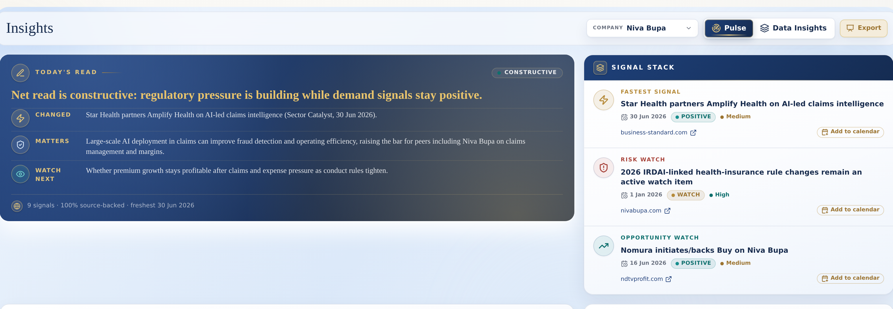
A single streamlined feed: fastest signal, risk watch and opportunity watch, each dated and tagged.
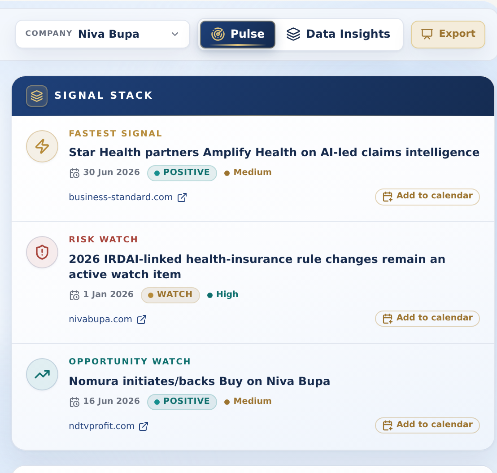
Dated signals open pre-filled in Google Calendar, or download an .ics for Apple/Outlook. No sign-in.
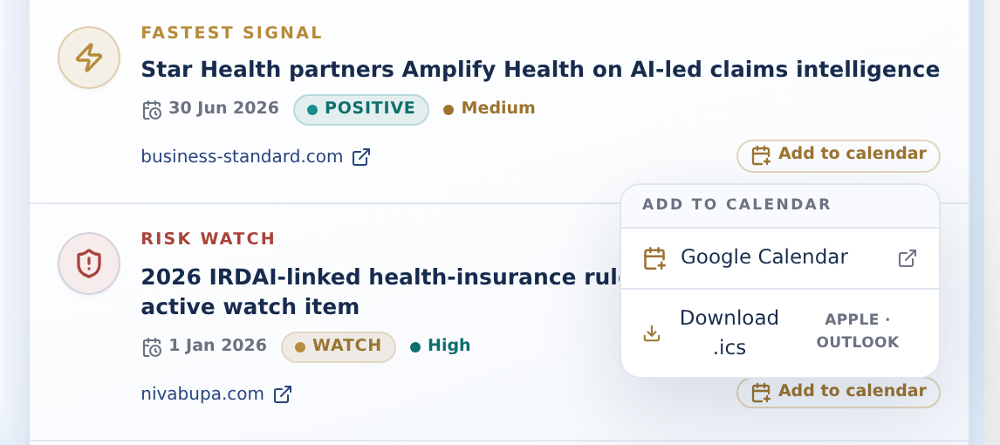
Drag-select any range of audit cells and open an AI panel that reads the numbers in context.
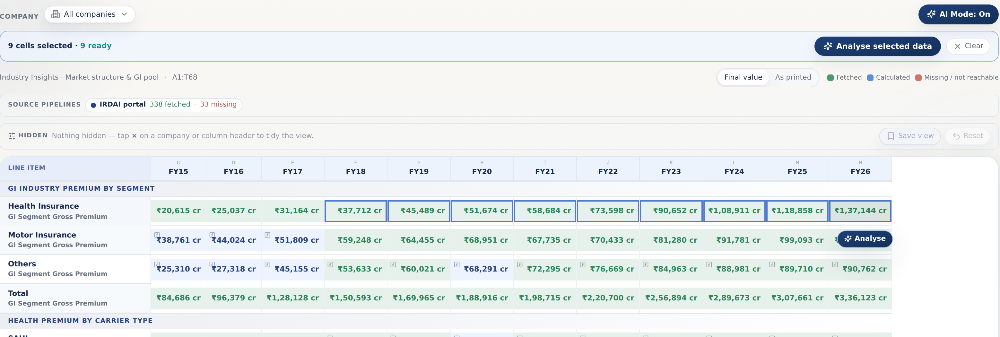
The same selection instantly becomes a chart, with a quick read and the formula behind it.
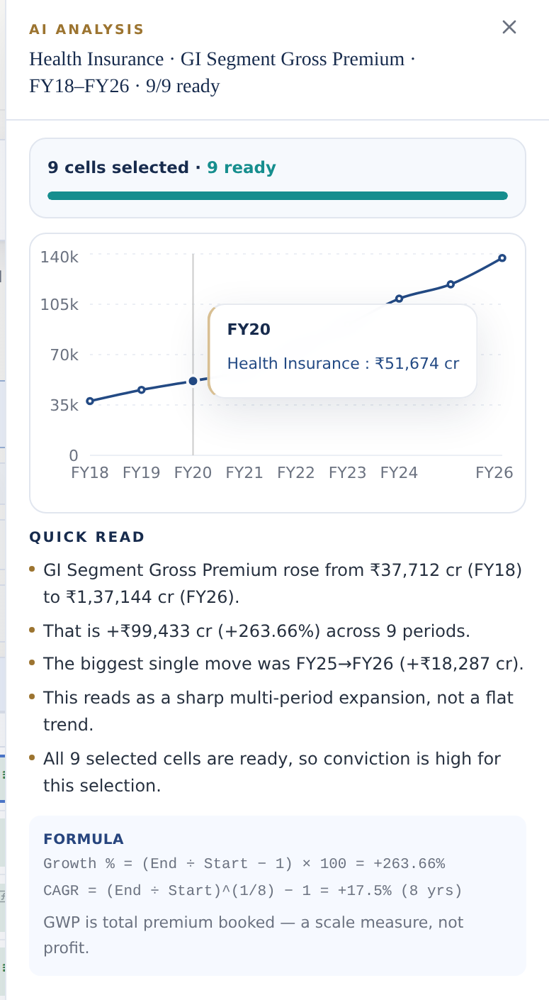
Correlations, management events and curated signals in one focused daily read.
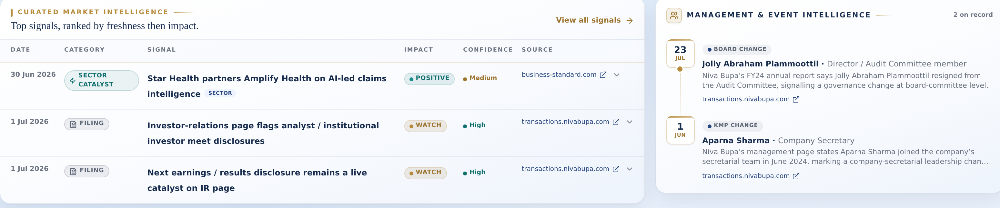
The industry snapshot now reads purely on general insurance — no life premium blended in.
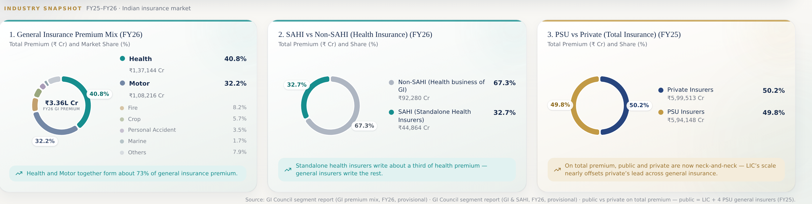
Health and Motor lead the GI pool — about 73% together — across seven segments.
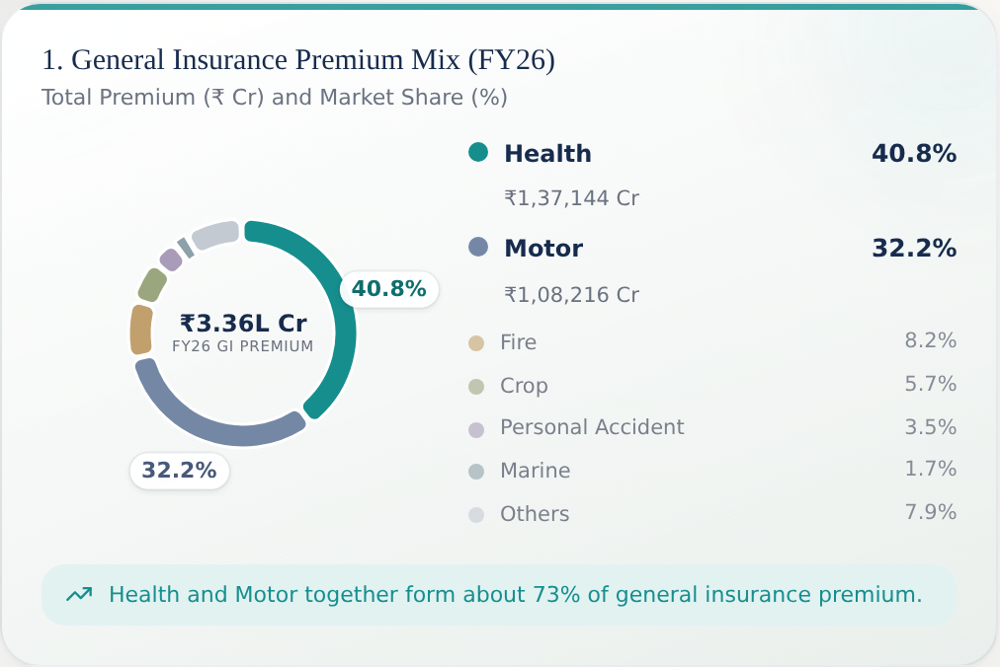
FY26 wherever the data is published; other periods stay honestly labelled.
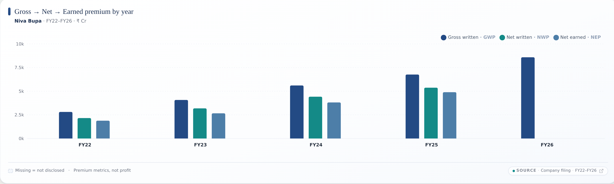
A complete row in the peer scorecard — every metric populated.
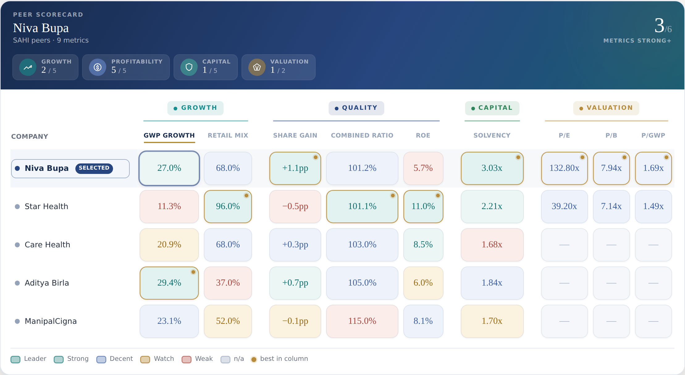
Switch the lens: the combined ratio restates to IFRS for insurers that publish it.
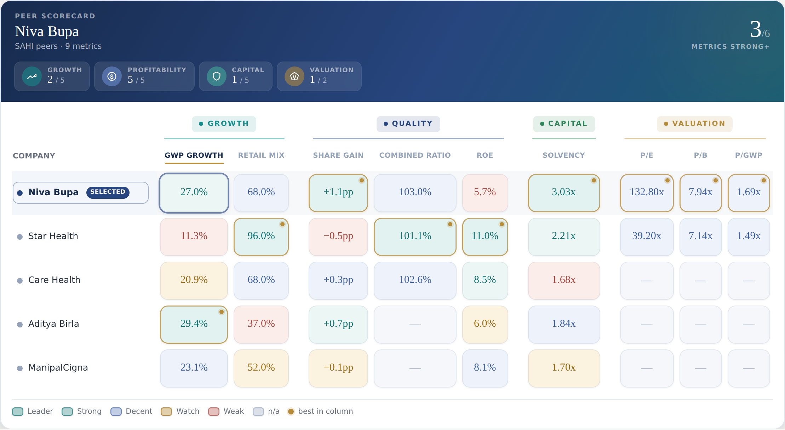
One derived figure feeds every surface, so the old 67% vs 88–96% split is gone.
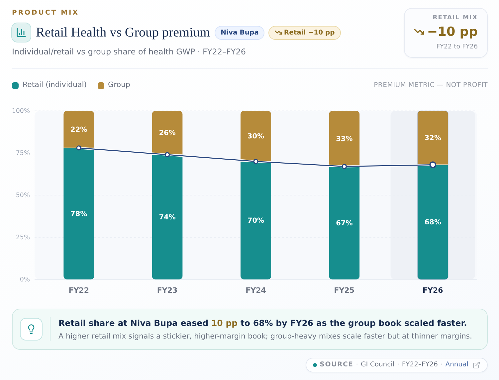
The Promise Tracker shows which three targets were met and which two are still open.
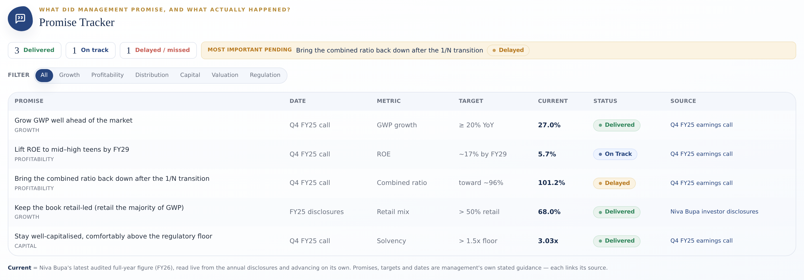